Etapa 5
Na ‘Etapa 5’ são apresentados os resultados, as recomendações e o CRP.
No cabeçalho por padrão são mostrados:
Horizonte planejamento: Data inicial e final estipulada na etapa 2.
Calculado às: Hora que o MRP foi executado.
Id execução: ID gerado na execução do MRP.
E os campos ‘Descrição’ e ‘Tipo do item’.
{kind=link}
No campo ‘Descrição’ podem ser feitas buscas de acordo com o tipo filtro selecionado no campo ‘Tipo do campo’:
Nº do item
Nº do item pai
Descrição
{kind=link}
{kind=link}
Aba Resultado
Nesta aba são sugeridos os itens para suprir os flags que foram marcados na ‘Etapa 4’. São apresentados:
Nº do item.
Descrição.
Datas: sugestão do dia atual para frente.
Linha do item: recomendação que aparecerá na aba ‘Recomendações’.
{kind=link}
O filtro de item ‘Pai’ não é apresentado. Isso ocorre porque um mesmo item ‘PAI’ pode ter vários itens ‘Filhos’, e, na aba de resultado, o item Pai não é exibido, resultando na impossibilidade de aplicar o filtro com base no item Pai.
Na coluna ‘Descrição’ há 4 linhas (para acessar o detalhe de cada linha, dê dois cliques sobre o valor):
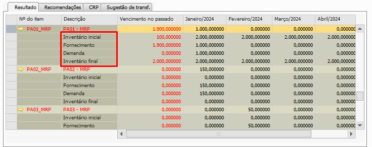{kind=link}
Para explicar as colunas, será usado como exemplo o item ‘PA01_MRP’, onde será detalhado as informações do mês de janeiro:
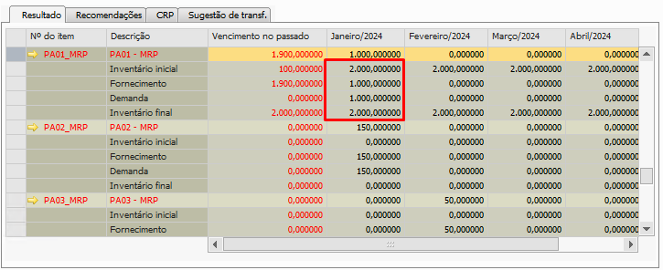{kind=link}
Inventário inicial:
Estoque do item no momento. Para datas futuras, o inventário inicial será sempre igual ao último inventário final.
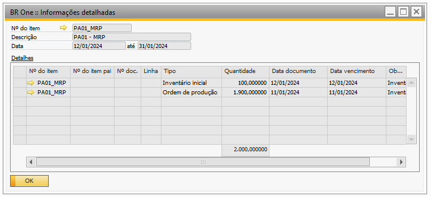{kind=link}
Fornecimento:
Soma da quantidade na data de vencimento da OP e/ou entrega da compra.
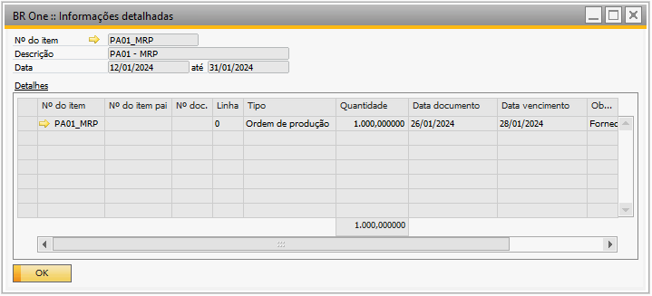{kind=link}
Demanda:
Indica a quantidade necessária de suprimento, nas informações detalhadas é mostrada a origem da demanda.
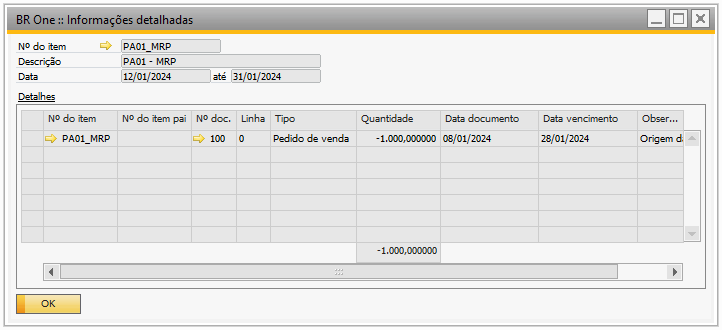{kind=link}
Inventário final:
Indica a quantidade disponível em estoque, cálculo inventário inicial + fornecimento - demanda.
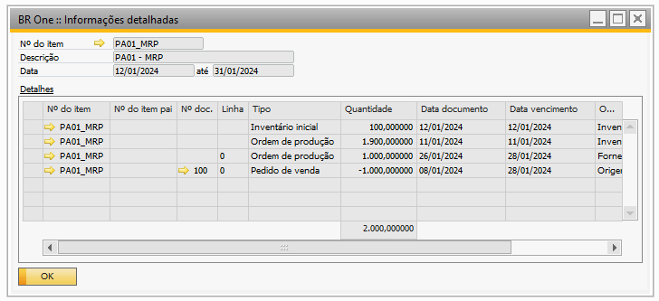{kind=link}
Se for dado duplo clique em alguma linha sem dados, a seguinte mensagem será exibida:
{kind=link}
BR One :: Sem dados para exibir.
Aba Recomendações
Nesta aba o MRP sugere solicitações de compra e ordens de produção. Essas informações são apresentadas em forma de planilha, onde cada linha representa uma recomendação.
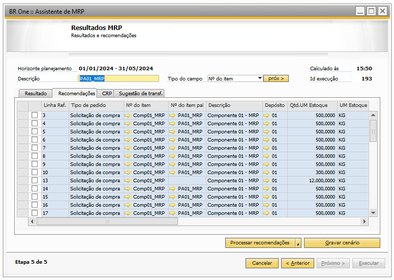{kind=link}
Tipo de pedido
A coluna ‘Tipo de pedido’ indica qual documento deverá ser criado, durante o processamento da recomendação. Para itens de compra, é recomendado uma ‘Solicitação de compra’ ou um ‘Pedido de compra’, a depender da configuração e para um item de produção é recomendado uma ‘Ordem de produção’.
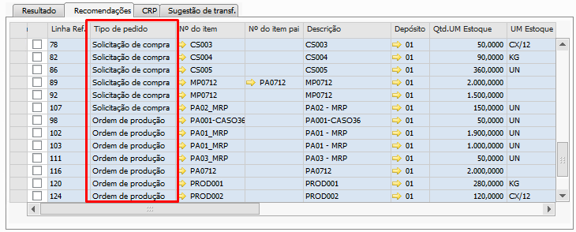{kind=link}
Exemplo na aba ‘Resultado’ para o PA01_MRP está sendo recomendado um fornecimento de 1.900 peças.
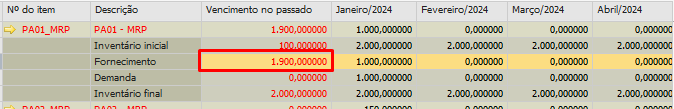{kind=link}
Na aba ‘Recomendações’, o MRP está recomendando a produção de 1.900 peças.
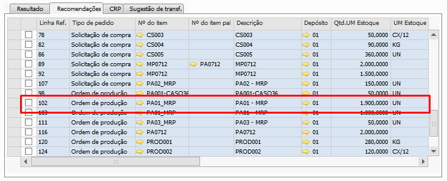{kind=link}
Nº do item
A coluna ‘Nº do item’ indica o número do item, conforme cadastrado em sistema.
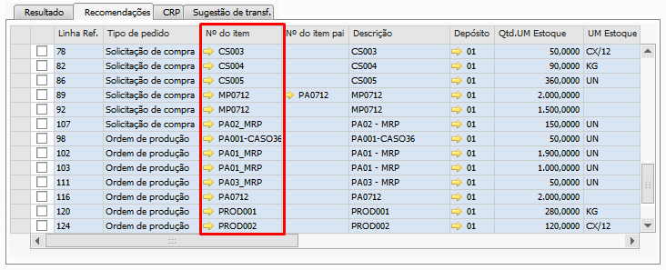{kind=link}
Nº do item pai
A coluna ‘Nº do item pai’ será preenchida com o item de nível mais alto.
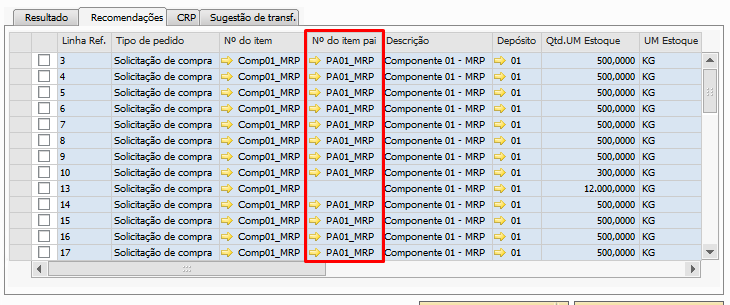{kind=link}
Descrição
A coluna ‘Descrição’ indica a descrição do item, conforme cadastrado em sistema.
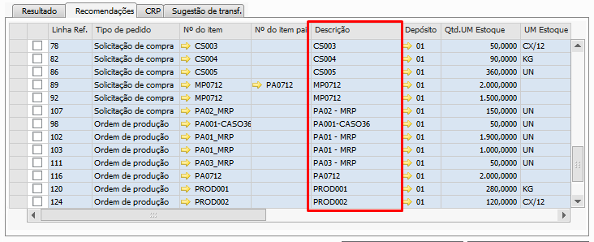{kind=link}
Depósito
A coluna ‘Depósito’ busca o depósito escolhido na fonte da demanda a ser atendida.
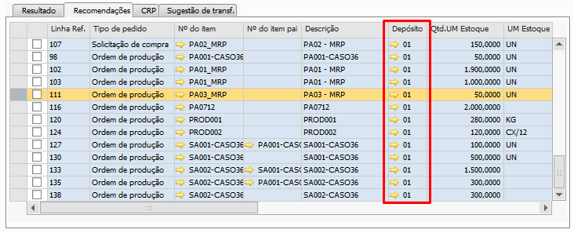{kind=link}
Qtd.UM Estoque
A coluna ‘Qtd.UM Estoque’ indica a quantidade de unidade de medida do item utilizada no estoque.
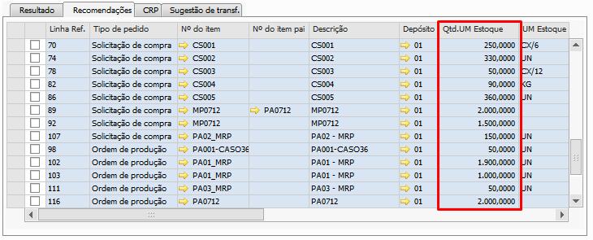{kind=link}
UM Estoque
A coluna ‘UM Estoque’ indica a unidade de medida utilizada no estoque.
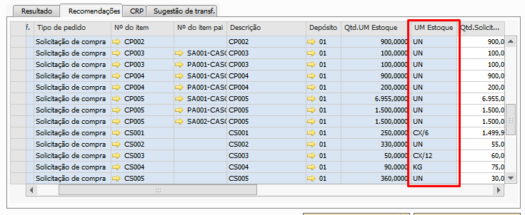{kind=link}
Qtd.Solicitada
A coluna ‘Qtd.Solicitada’ indica a quantidade recomendada pelo MRP conforme demanda encontrada.
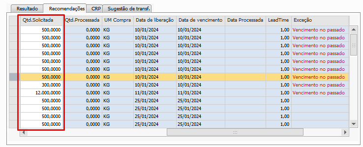{kind=link}
Esta coluna permite a alteração da quantidade, caso usuário tente processar uma quantidade eu igual a zero, o add-on exibirá a seguinte mensagem:
{kind=link}
BR One :: Quantidade solicitada deve ser maior que zero. (Linha: x)
Qtd.Processada
A coluna ‘Qtd.Processada’ indica a quantidade processada pelo MRP.
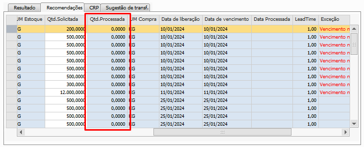{kind=link}
UM Compra
A coluna ‘UM Compra’ indica a unidade de medida de compra para os itens, essa configuração é recuperada do cadastro do item.
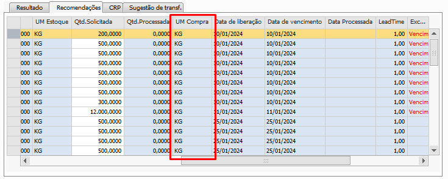{kind=link}
Data liberação
A coluna ‘Data liberação’ é definida conforme o leadtime configurado no cadastro do item.
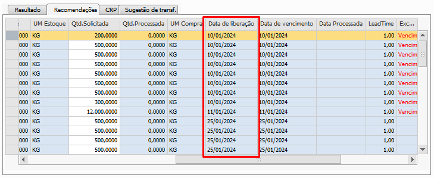{kind=link}
Data Vencimento
A coluna ‘Data vencimento’ é definida conforme o leadtime configurado no cadastro do item.
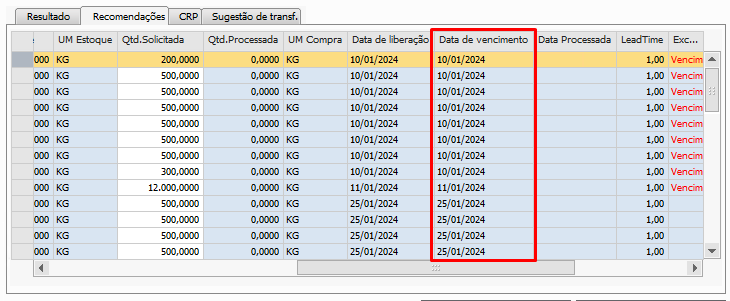{kind=link}
Data Processada
A coluna ‘Data Processada’ indica a data no qual a linha (recomendação) foi processada pela MRP.
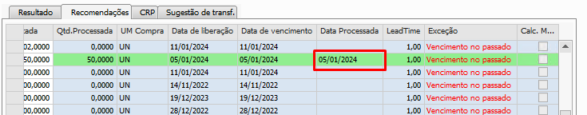{kind=link}
LeadTime
A coluna ‘LeadTime’ indica o tempo em dias para disponibilização das quantidades do item em estoque. Para itens de compra seria o prazo de entrega e para os itens de produção, seria o prazo de produção do mesmo.
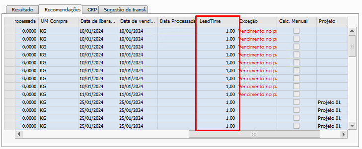{kind=link}
Exceção
A coluna ‘Exceção’ pode trazer ou não alguma mensagem, onde é informado o status da linha, exemplo de mensagem que pode vir a aparecer, ‘Vencimento no passado’ que indica que a linha está com a data de vencimento no passado.
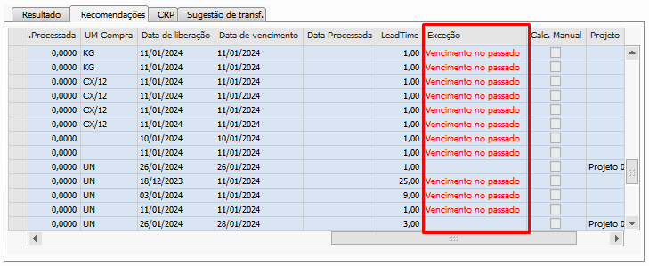{kind=link}
Calc. Manual
Quando o flag da coluna ‘Calc. Manual’ está marcado, indica que houve uma alteração manual na recomendação realizada pelo MRP. Ou seja, o usuário realizou alguma alteração de data na aba CRP e salvou as modificações, dessa forma o MRP irá recarregar as recomendações e a linha referente a modificação estará com o flag marcado.
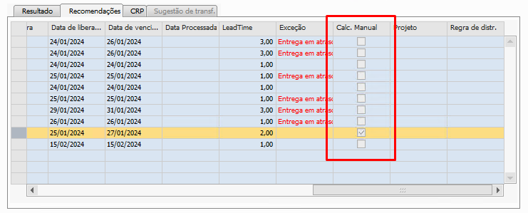{kind=link}
Projeto
A coluna ‘Projeto’ indica a qual projeto a linha do documento da demanda está atrelado, é recuperada do pedido de venda. Essa regra é levada do item pai para o item filho.
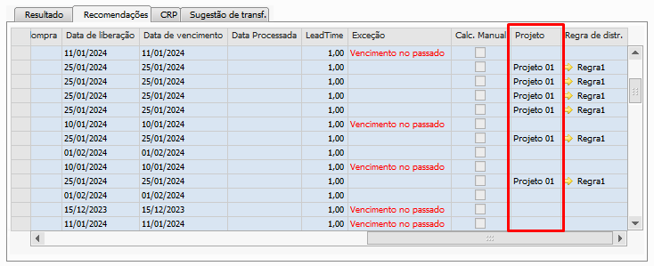{kind=link}
Regra de distr.
A coluna ‘Regra de distr.’ indica a regra de distribuição informada na linha do documento da demanda. Essa regra é levada do item pai para o item filho.
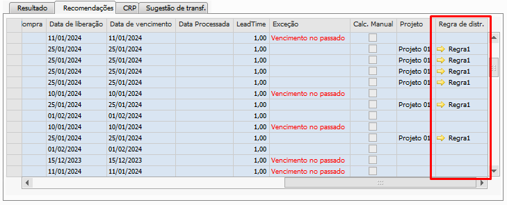{kind=link}
A aba ‘Recomendações’ possui também os botões ‘Processar recomendações’ e ‘Gravar cenário’.
Processar recomendações
Para processar uma recomendação, basta selecionar as linhas na primeira coluna e clicar no botão ‘Processar recomendações’ para processar recomendações ou ‘Processar grupo’ para processar um mesmo item selecionando várias recomendações, criando apenas uma recomendação para cada item.
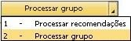{kind=link}
O processamento de recomendações irá somar as quantidades dos itens que possuírem a mesma data de vencimento e o processo em grupo irá somar as quantidades de todos os itens iguais e considerará a menor data como data de vencimento para o documento.
O depósito considerado será o depósito padrão do item, o depósito do roteiro considerado na rodada do MRP de acordo com a configuração, para ‘Pedidos’ e ‘Solicitações de compra’.
Se o item não possuir um, será considerado então o depósito padrão da base ou filial conectada. Em caso de multifilial, se o depósito padrão do item não estiver vinculado à filial, o depósito padrão da filial será utilizado.
Recomendações de cálculo manual, se processadas em grupo, serão gerados documentos agrupados pela data de vencimento definida.
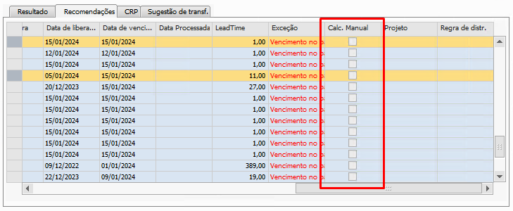{kind=link}
{kind=link}
BR One :: Recomendações marcadas como Cálculo manual serão agrupadas pela Data de vencimento. Deseja continuar?
Se confirmada, a operação gerará documentos agrupados pela data de vencimento somando suas quantidades, para recomendações definidas como cálculo manual.
Para as demais, seguirá com o processo determinado anteriormente, somando também suas quantidades, porém, irá considerar a menor data de vencimento, para que todas as recomendações sejam atendidas.
Se o processamento for feito com sucesso, as seguintes mensagens aparecerão na status bar:
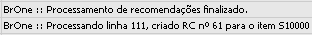{kind=link}
As linhas também serão coloridas de acordo com o processamento:
Verde claro: processamento feito com sucesso
Verde escuro: processamento de grupo feito com sucesso
Vermelho: erro na recomendação
{kind=link}
Quando for feito o processamento por recomendação e forem selecionadas várias linhas, será criada uma recomendação para cada linha selecionada e a coluna ‘Qtd. Processada’ será igual à coluna ‘Qtd. Solicitada’.
Exemplo: para o item Comp03_MRP foi feito o processamento por recomendação, selecionando duas linhas com quantidade 900 e 50. Nesse caso, a coluna ‘Qtd. Processada’ de cada linha ficará com o valor da coluna ‘Qtd. Solicitada’.
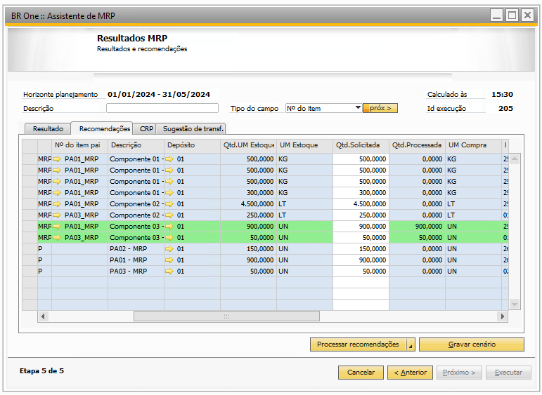{kind=link}
Sendo assim, foi criada uma solicitação de compra, com as 2 linhas selecionadas no MRP.
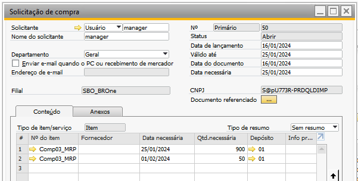{kind=link}
O jeito que será processado (agrupado por itens, grupo de itens, etc), será definido na configuração ‘Permitir geração de Pedido de Compras’.
Quando for feito o processamento por grupo, como dito acima, será criado uma recomendação para cada item e a coluna ‘Qtd. Processada’ será a soma desse processamento.
Exemplo: para o item Comp03_MRP foi feito o processamento do grupo, selecionando 2 linhas com quantidade 10 cada.
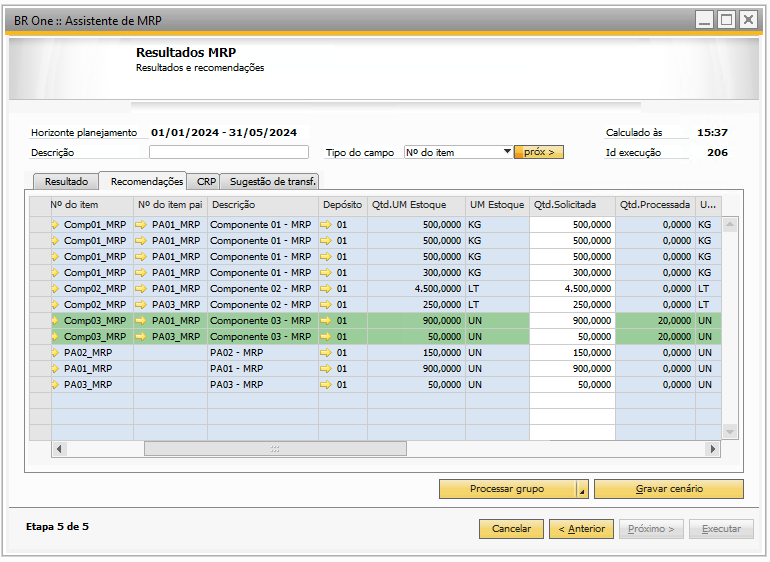{kind=link}
Será criada apenas uma solicitação para o item Comp03_MRP com a quantidade total 20.
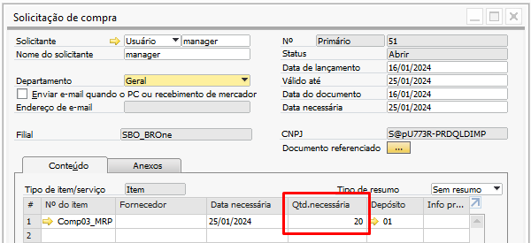{kind=link}
Se for processada uma ‘Ordem de produção’, caso não tenha um calendário válido ou definido para os grupos de recurso, centros de trabalho ou recursos, será retornada a data 01/01/1900 nos campos ‘Data início’ e ‘Data término’ da OP, o que indica que o processo está errado e deve ser corretamente configurado, já que é obrigatório haver a inserção de um calendário válido para o ano corrente.
Caso um pedido de venda tenha um item que contenha seu método de suprimento como ‘Produzir’, irá ser solicitada uma ordem de produção pelo MRP, onde após ser processada e gerada com sucesso, na aba ‘Venda’ conterá o pedido vinculado.
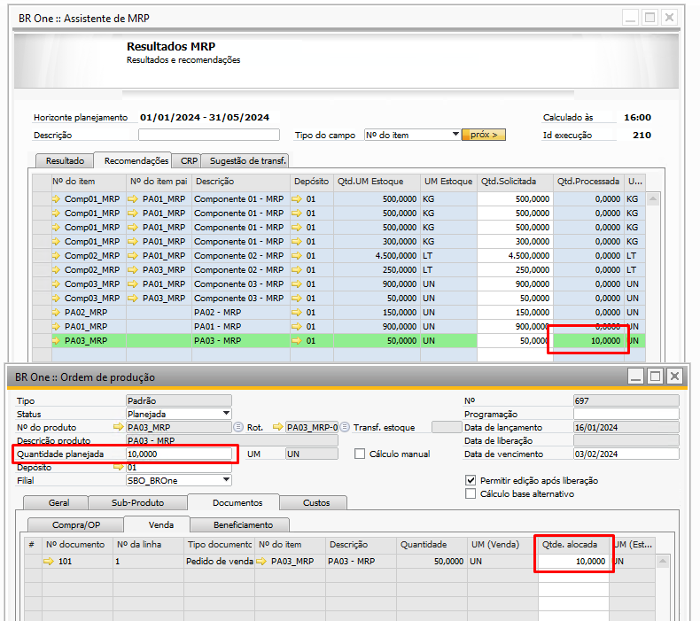{kind=link}
Caso seja alterada a quantidade a ser produzida do item nas linhas do MRP, a ordem de produção ainda irá vincular o pedido de venda, mas com a quantidade planejada da OP conforme a quantidade solicitada nas linhas do MRP.
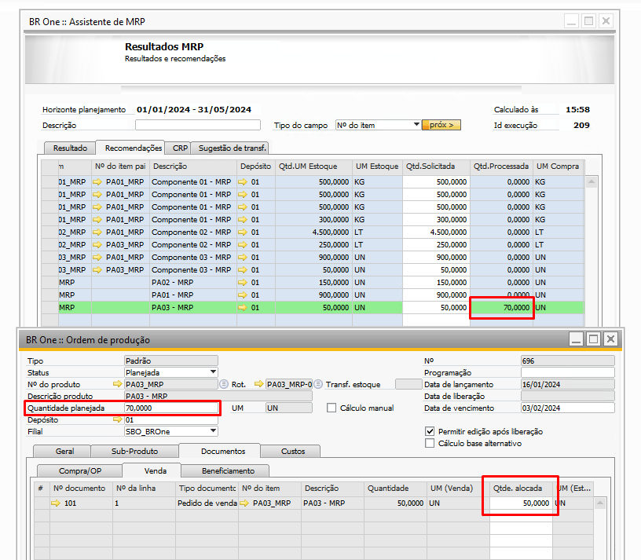{kind=link}
Data de entrega em Atraso
Quando o resultado do cálculo de leadtime fica em atraso, a entrega das fontes de demanda (‘Pedido de venda’, ‘Nota fiscal de entrega futura’, ‘Ordem de produção’, etc) ficará em atraso, resultando em um novo cálculo.
Exemplo: Para esse exemplo, será considerado que o calendário de compra e o calendário dos recursos é o mesmo, 8h por dia de segunda a sexta. O roteiro do item PA01_MRP possui os itens Comp01_MRP, Comp02_MRP e SA01_MRP. Nas operações 10 e 20, há os recursos FER0A-01 (2 horas) e MAQ0A-01 (4 horas).
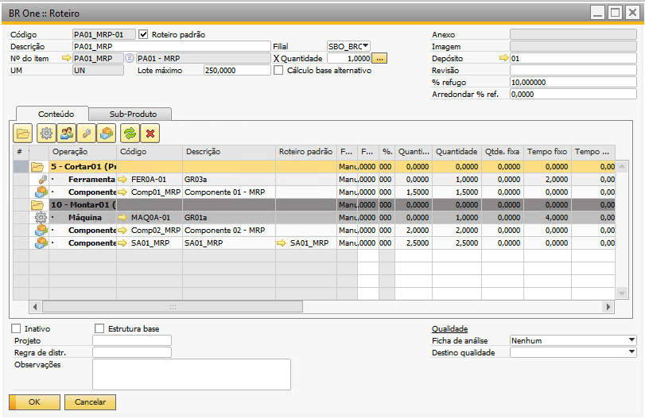{kind=link}
O SA01_MRP é um item semi acabado, cujo roteiro possui apenas a operação 10 com o item Comp03_MRP e o recurso MAQ0A-01 (15 horas).
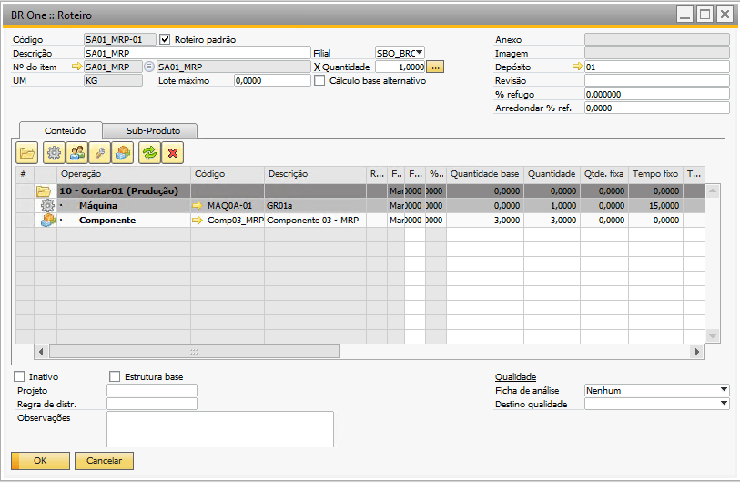{kind=link}
Apenas o item Comp03_MRP tem leadtime de 2 dias. Todos os outros, o leadtime é 0.
Para simular esse exemplo, foi criado um ‘Pedido de Venda’ para o dia 16/01/2024.
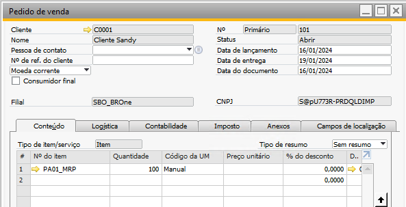{kind=link}
Como o Comp03_MRP faz parte da estrutura do item semi acabado SA01_MRP, então a compra dele começará em 17/01/2024, levando o dia da execução + 2 dias (leadtime do item: 2 dias).
Após, o recurso MAQ0A-01 da operação 10 do roteiro do semi acabado começará no dia 17/01 e terminará no dia 18/01, pois ele exige 15h de trabalho (8h no dia 17/01 e 7h no dia 18/01). Então, o item SA01_MRP levará esse tempo de produção, de 17/01 a 18/01.
Na operação 10 do PA01_MRP, o Comp01_MRP será comprado no dia 17/01 e o recurso FER0A-01 iniciará dia 18/02.
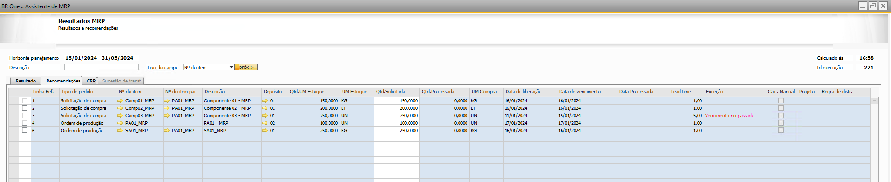{kind=link}
Nas configurações de produção, aba ‘MRP’, o campo ‘Quantidade de dias entre operações’ está com o valor 1, então, as operações 10 e 20 terão 1 dia de diferença para iniciar.
Aba CRP
Nesta aba são mostrados os detalhes dos recursos da OP sugerida. Se necessário, modifique e salve antes de processar a recomendação.
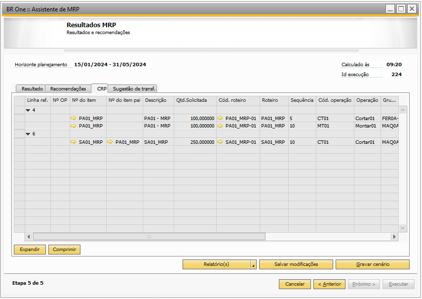{kind=link}
Os botões ‘Expandir’ e ‘Comprimir’ são utilizados para expandir e diminuir o CRP.
Para ordens de produção que tiverem seus recursos e/ou datas de início e data de término alteradas e salvas, passarão a ser consideras como OP de cálculo manual.
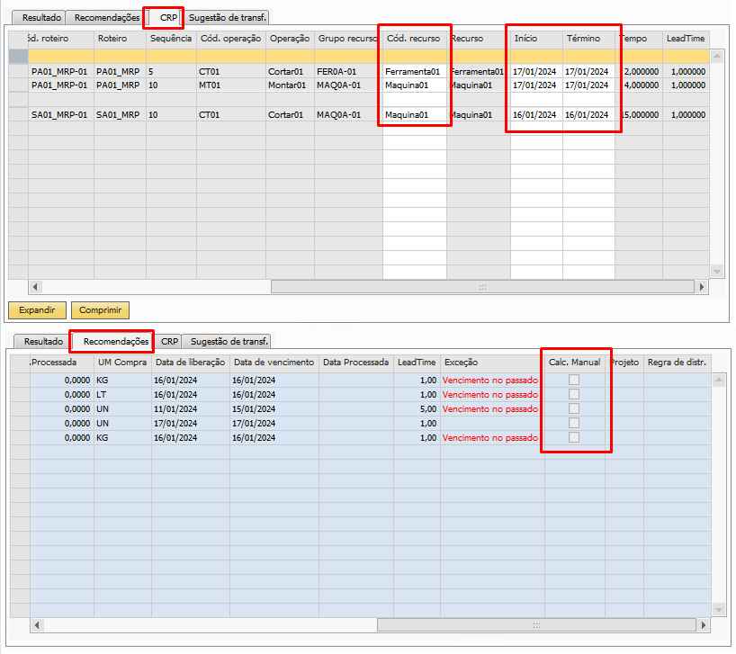{kind=link}
{kind=link}
Para visualizar os detalhes do ‘CRP’, ou seja, o detalhamento de todos os dias de trabalho entre a data de início e a data de término estipuladas, é necessário clicar duas vezes na linha desejada e uma tela com as informações será exibida para consulta.
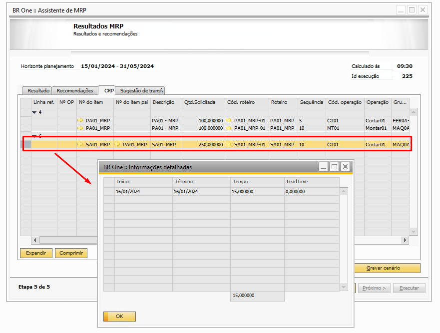{kind=link}
Os detalhes do ‘CRP’ não serão visíveis apenas para OPs e recomendações definidas com ‘Cálculo manual’. Neste caso o add-on irá retornar a seguinte mensagem:
{kind=link}
BR One :: Não é possível visualizar detalhes do CRP para recomendação definida com cálculo manual.
A coluna ‘Tempo’ trará os valores definidos no roteiro/ordem de produção. O valor definido na coluna ‘Tempo fixo’ da OP não será alterado, independentemente da quantidade solicitada:
{kind=link}
O valor definido na coluna ‘Tempo variável’ da OP será multiplicado pela quantidade solicitada, ou seja:
Tempo = (Tempo variável / Quantidade do roteiro ) * Qtd. Solicitada do MRP
{kind=link}
O ‘CRP’ pode gerar o relatório de ‘Carga Máquina’ que deve ser configurado na ‘Configuração de Produção’ na aba MRP.
{kind=link}
Ao clicar na opção ‘3 - Carga Máquina’, uma validação será realizada para verificar se o relatório em ‘Crystal Reports’ foi informado nas configurações. Caso não tenha sido, a seguinte mensagem será exibida:
{kind=link}
BR One :: Informe o caminho do relatório da tela de Configuração de Produção.
Caso o arquivo já esteja configurado, o relatório será exibido em tela para o usuário.
O botão ‘Salvar’ modificações é usado para caso algum recurso ou data de início ou de término sejam modificados.
Se a data de término informada for um feriado ou não for um dia de trabalho no calendário configurado, a data anterior mais próxima será definida como data de término.
Exemplo: se um domingo for definido como data de término, ao ser realizado o cálculo do MRP, se a última sexta não for feriado, ela será definida como data de término.
A partir do momento que qualquer uma das datas para qualquer linha da operação seja alterada, aquela ordem de produção ou recomendação será considerada como um documento de cálculo manual.
Portanto, a ordem de produção e a recomendação serão marcadas como cálculo manual.
{kind=link}
Obs: o botão ‘Gravar cenário’ também está nas etapas 2 a 6, pois o cenário pode ser gravado em qualquer uma delas.
Aba Sugestão de transferência
{kind=link}
Para execuções do MRP filtradas por depósito, será exibida a coluna do depósito da origem da demanda e se existir saldo nos depósitos configurados na prioridade, será exibida uma mensagem alertando para a quantidade disponível para transferência de estoque.
{kind=link}
Na aba ‘Sugestão de transf.’ serão exibidas as sugestões de transferências de estoque de acordo com a prioridade dos depósitos configurados. Nesta tela, serão exibidas informações como número do item, descrição, depósito de origem e depósito de destino, filial de origem e filial e destino.
{kind=link}
Transferência de estoque entre filiais
No ‘Assistente do MRP’ foi incluída a funcionalidade ‘Processar sugestão’.
Este botão será responsável por gerar os esboços de transferência de estoque que complementarão o processo de transferência entre filiais.
Para gerar os esboços, é necessário selecionar as linhas desejadas e clicar no botão ‘Processar sugestão’.
{kind=link}
Se gerado com sucesso, a linha de referência será pintada de verde, tanto para aba de ‘Sugestão de transf.’, quanto para aba ‘Recomendações’.
{kind=link}
{kind=link}
Os esboços poderão ser encontrados na tela seguindo o caminho abaixo:
Menu principal -> Estoque -> Transações do estoque -> Assistente de Geração de Transferência entre filiais
{kind=link}
Após pesquisar os esboços gerados, os mesmos deverão ser acessados pela seta laranja e inseridos manualmente.
Após a inserção dos esboços, serão gerados, se necessário, os documentos fiscais (‘Nota fiscal de saída’, ‘Nota fiscal de entrada’, ‘Entrada e Saída de mercadorias’) que realizarão a transferência dos saldos em estoque.
Esses documentos fiscais são obrigatórios e não será permitido fechar os mesmos antes de adicioná-los.
Ao inserir a nota fiscal de saída, um documento será gerado para transferências entre filiais diferentes.
O sistema lançará uma saída de mercadoria com o depósito de trânsito configurado para filial e um esboço de nota fiscal de entrada será aberto.
Ao inserir o documento de entrada, o sistema lançará uma ‘Entrada de mercadoria’ para o depósito de destino informado no MRP.
Caso seja necessário reverter essa transação, ela deve ser revertida na tela ‘Transf. filiais - Assistente de cancelamento’.
{kind=link}
Nesse assistente, os documentos deverão ser selecionados e ao processá-los, os mesmos serão revertidos e cancelados.
Para transferências realizadas entre a mesma filial, será necessário realizar o processo de reversão no próprio documento, transferências entre a mesma filial não serão exibidas no assistente de cancelamento.